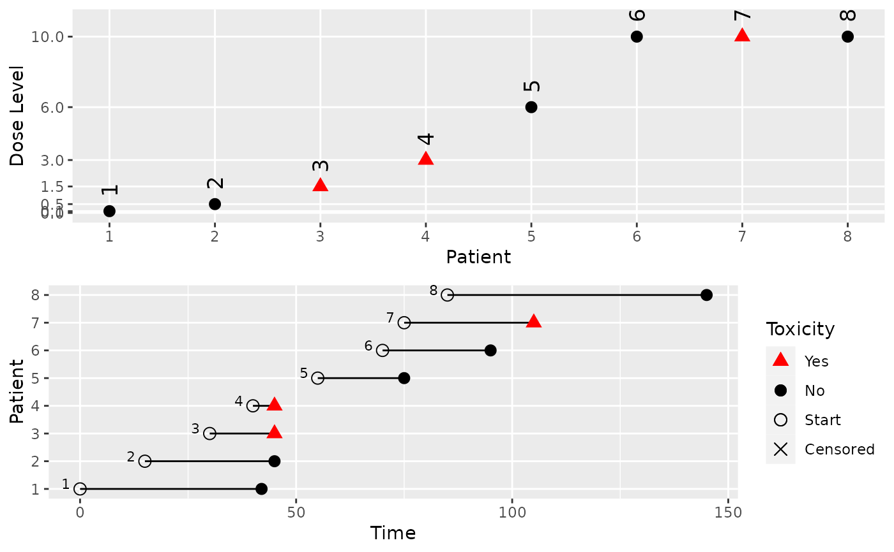

![[Stable]](figures/lifecycle-stable.svg)
A method that creates a plot for DataDA object.
# S4 method for DataDA,missing plot(x, y, blind = FALSE, ...)
Arguments
| x | ( |
|---|---|
| y | ( |
| blind | ( |
| ... | passed to the first inherited method |
Value
The ggplot2 object.
Examples
# Create some data of class 'DataDA'. my_data <- DataDA( u = c(42, 30, 15, 5, 20, 25, 30, 60), t0 = c(0, 15, 30, 40, 55, 70, 75, 85), Tmax = 60, x = c(0.1, 0.5, 1.5, 3, 6, 10, 10, 10), y = c(0, 0, 1, 1, 0, 0, 1, 0), doseGrid = c(0.1, 0.5, 1.5, 3, 6, seq(from = 10, to = 80, by = 2)) ) #> Used default patient IDs! #> Used best guess cohort indices! # Plot the data. plot(my_data) 